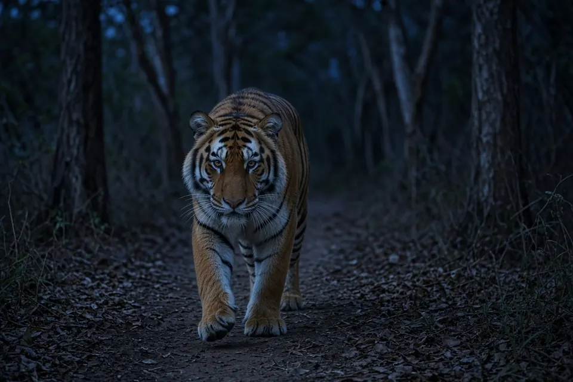

Home › Blog › How much does a tiger weigh?
How Much Does a Tiger Weigh?
An adult tiger weighs about 75 to 325 kilograms (165 to 716 pounds). San Diego Zoo Wildlife Alliance and the IUCN SSC Cat Specialist Group both give that range. Males outweigh females, tigers from the Russian Far East are far heavier than tigers on Sumatra, and a newborn weighs about one kilogram.

How much does an adult tiger weigh?
San Diego Zoo Wildlife Alliance lists adults at 165 to 716 pounds (75 to 325 kilograms). Body length is 4.8 to 9.5 feet (1.5 to 2.9 meters), depending on sex and location, plus a tail of 2.3 to 3.6 feet (0.7 to 1.1 meters). Males are larger than females.
The IUCN SSC Cat Specialist Group uses the same 75 to 325 kg, with a body length of 150 to 230 cm and a tail of 90 to 110 cm. It calls the tiger the largest living cat, then adds that size varies among subspecies and that large lions can exceed smaller tigers in size.
A fact sheet from the International Environment Library Consortium, using Hunter (2011) and Mazak (1981), splits living subspecies by sex: males 100 to 261 kg (200 to 575 lb) and females 75 to 177 kg (170 to 390 lb). A footnote says males in zoos weigh up to 325 kg (716 lb).
Why the published numbers do not match
Geography does most of the work. The fact sheet, citing Kitchener (1999), says tigers are larger farther north, where more mass relative to surface area helps them keep heat, and smaller farther south, where less mass helps them shed heat. Prey size, seasonal food and the smaller size of island animals push the same way. San Diego Zoo Wildlife Alliance places the largest subspecies in snowy Russia and the smallest, darkest subspecies in Indonesia.
Subspecies names are under review, which is another reason two pages seem to disagree. The Cat Specialist Group still lists six living subspecies (Amur, Bengal, northern Indochinese, Malayan, South China and Sumatran) and says genetic studies propose only two: Panthera tigris tigris on the mainland, and Panthera tigris sondaica on Sumatra and formerly on Java and Bali. Marwell Zoo says the IUCN recognises six living subspecies for now. Northern tigers and island tigers would not become the same weight if those names were merged.
How much do Amur tigers weigh?
Amur tigers, which Marwell Zoo notes were once called Siberian tigers, are the heavy northern animals. Smithsonian's National Zoo says males weigh up to 660 pounds (300 kilograms) and measure 10 feet (3 meters), and that the largest tiger ever recorded was an Amur tiger. Marwell gives males 180 to 306 kg and females 100 to 167 kg, with lengths of 2.7 to 3.3 m for males and 2.4 to 2.7 m for females, and calls them the palest and largest type.
The fact sheet's Mazak (1981) table matches those weights and gives male head and body length as 270 to 330 cm. Citing Hunter (2011), it also says Amur males weigh up to 325 kg (716 lb). San Diego Zoo Wildlife Alliance states a higher ceiling, up to 12 feet (3.7 m) and 933 pounds (423 kg), along with a longer coat and a layer of fat. Marwell and that Mazak table share a male band of 180 to 306 kg. The higher figures are ceilings, and the zoo's own species-wide box still ends at 325 kg.
Bengal tigers and the smaller island tigers
San Diego Zoo Wildlife Alliance calls the Bengal tiger the second largest subspecies. Males can reach 10.5 feet (3.2 m) and 650 pounds (295 kg) in the forests and wetlands of India, Bangladesh, Bhutan and Nepal. It describes Indochinese tigers as about 20 percent smaller, and darker, and South China tigers as slightly smaller again. South China tigers, it says, have not been observed in the wild since the 1970s. The Cat Specialist Group calls them likely extinct in the wild and found only in captivity.
Sumatran tigers are the smallest living subspecies on each of these pages. Smithsonian's National Zoo caps them at 310 pounds (140 kilograms) and 8 feet (2.4 meters). The fact sheet caps Sumatran males at 140 kg (309 lb). That can be less than half an Amur male from the 180 to 306 kg band. San Diego Zoo Wildlife Alliance also describes a darker coat and longer fur beside the face.
Males, females and cubs
Males are larger, and the gap is widest in the north. The fact sheet, citing Seidensticker (1993), says males are 1.3 to 1.6 times larger than females, with a heavier skull. Smithsonian's National Zoo says females of every subspecies tend to be smaller. San Diego Zoo Wildlife Alliance says they always are.
A cub is not a small adult. San Diego Zoo Wildlife Alliance gives a birth weight of 2.2 pounds (1 kilogram), a gestation of about 103 days, and litters of up to 7, averaging 2 to 3. The Cat Specialist Group lists 1 to 5 cubs. Marwell Zoo lists 1 to 5 young and a gestation of 3.5 months. Female weights on the fact sheet start at 75 kg, so the birth weight has to multiply many times over first.
Is a tiger heavier than a lion?
Not on average. The fact sheet, citing Kitchener and Yamaguchi (2010), puts an average adult male tiger at 160 kg (353 lb) and an average adult male lion at 175 kg (386 lb). Some individual male tigers may still be the largest living cats, it says, because tigers vary more in size, but the records are too unreliable to settle that. The Cat Specialist Group's matching point is that large lions can exceed smaller tigers in size. The six species sit together on the comparison table, and another page answers how much a leopard weighs.
Body mass also changes the work of being a tiger. Marwell Zoo says tigers need to eat 50 to 60 large prey animals a year, so a 140 kg Sumatran tiger and a 300 kg Amur tiger are not hunting on the same terms. The tiger profile links that to what tigers eat and to how big a tiger's territory is.
Frequently asked questions
How much does an adult tiger weigh?
About 75 to 325 kg (165 to 716 lb), from San Diego Zoo Wildlife Alliance and the IUCN Cat Specialist Group. By sex, a fact sheet gives males 100 to 261 kg and females 75 to 177 kg, with zoo males up to 325 kg.
Are male tigers heavier than females?
Yes. Females are always smaller, says San Diego Zoo Wildlife Alliance. The fact sheet, citing Seidensticker (1993), says males are 1.3 to 1.6 times larger than females.
What is the heaviest type of tiger?
Amur tigers. Marwell Zoo and a Mazak (1981) table give males 180 to 306 kg. Smithsonian's National Zoo says up to 300 kg. Other ceilings are 325 kg and, at San Diego Zoo Wildlife Alliance, 423 kg.
How much does a Sumatran tiger weigh?
They are the smallest living tigers. Smithsonian's National Zoo caps them at 140 kg (310 lb). The fact sheet caps Sumatran males at 140 kg.
Do tigers weigh more than lions?
Not on average. The fact sheet gives 160 kg for an average adult male tiger and 175 kg for an average adult male lion. Some male tigers are larger, and large lions can exceed smaller tigers.
Cite this page
APA: BigCatWise. (2026, November 18). How much does a tiger weigh?. https://bigcatwise.com/blog/how-much-does-a-tiger-weigh.html
MLA: "How much does a tiger weigh?." BigCatWise, 18 Nov. 2026, bigcatwise.com/blog/how-much-does-a-tiger-weigh.html.
Chicago: BigCatWise. "How much does a tiger weigh?." Last modified November 18, 2026. https://bigcatwise.com/blog/how-much-does-a-tiger-weigh.html
Please check the date you accessed the page and adjust to your teacher's or journal's style guide.